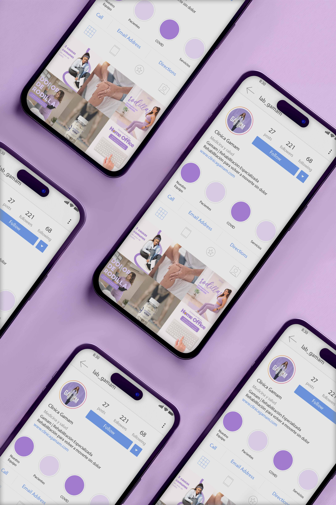

Instagram feed Design
This project focused on designing an Instagram feed for GAMAM based on a template-driven system that ensures both visual consistency and ease of use. The main goal was to create a set of posts that could be easily recreated, making the content production process more efficient and sustainable over time. At the same time, the system was designed to maintain a strong and cohesive visual identity, understanding that Instagram is a highly visual and aspirational platform. To achieve this, I developed a combination of flexible templates: some for quotes and short-form content, others for carousels, and additional formats focused on lifestyle imagery. Each template follows a consistent visual language while allowing enough variation to keep the feed dynamic and engaging. The result is a scalable and adaptable content system that balances aesthetics, functionality, and brand coherence.